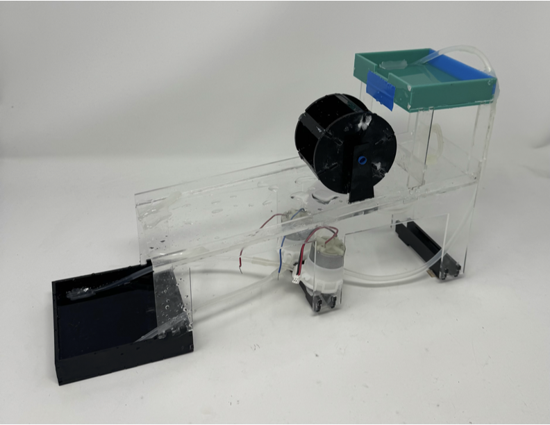
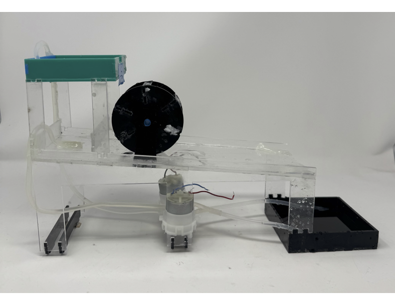
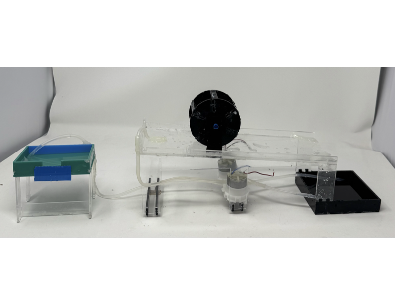
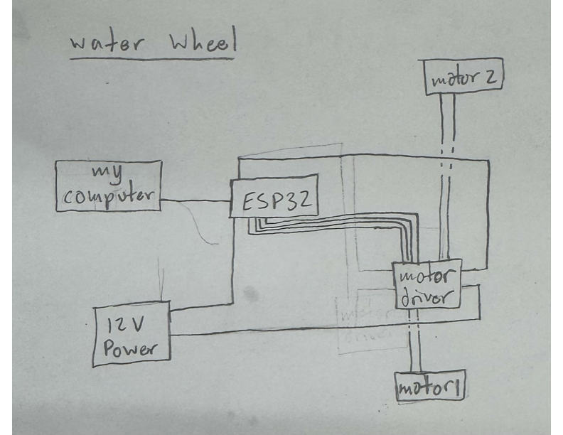
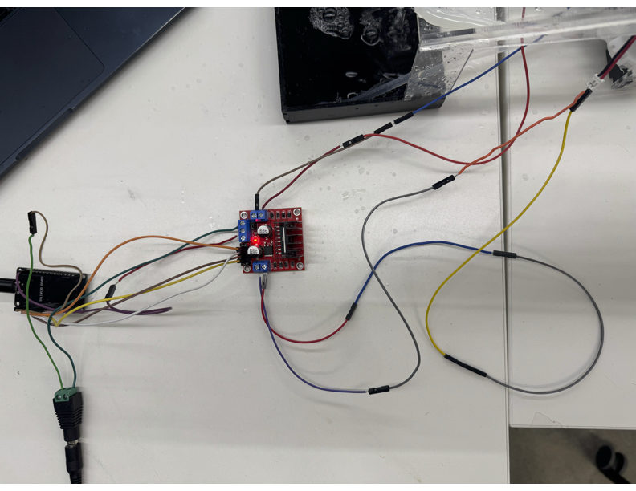

<div class="textcontainer">
<p class="margin"> </p>
<h3>Week 4: Microcontroller Programming</h3>
<h4> Two Motors, Two Speeds, Two Settings </h4>
<p style="color:seagreen; font-size:18px;"> For this weeks assignment I chose to continue with my water wheel. I started by remaking the entire thing out of acrylic so it would be water proof. This was an essential step in program becasue the programming required testing it, then making changes, then testing again. It ended up being a lot of work redrawing everything with box joints, but came together pretty well. I also added a feature that allows the top pool of the wheel to be removed. This is just an aesthetic choice. The top is nice to have for the programming assignment, but looks wise I find it nice to view the wheel on its own without the top. <p>
<p></p>
<p></p>
<p></p>
<p style="color:seagreen; font-size:18px;"> In terms of programming this week, I started by adding a seocnd motor. One motor goes up to the ramp and just flows down, allowing a nice trickle of water, and the other motor goes up top and controls the spinning of the wheel. The first issue I ran into was that the 5 volt power source did not quite have enough flow to get my wheel spinning. When I went up to 12 volts, I had plenty of power so that problem was solved easily enough. Next I programmed the two motors to start and stop at different times and then I added a speed change to one of them. My idea in how it all comes together is that motor one (the lower motor) starts at a low speed, it sounds like a nice soft trickle of water, for ten seconds, then it goes to a high speed for ten seconds, really up the water flow, then motor two turns on for twenty seconds, and then they both turn off for four seconds simultaneously before the loop reruns. The speed adjustment was a little diffuclt, but ended up coming together well and I like the different sounds the water produces depending on the current state the wheel is in. <br>
My circuit is diagrammed and photographed below. It was a little complex with the power source, computer, and two motors, but it worked consistently. <p>
<p></p>
<p></p>
<p style="color:seagreen; font-size:18px;"> If you would like to view my code, it can be opened via the link below. <p>
<p class="margin"> </p>
<div class="flexrow">
<a id="btn" href="waterwheel2motorspeedcode.ino" download> View Code </a>
</div>
<p class="margin"> </p>
<p style="color:seagreen; font-size:18px;"> The first video is slightly lower quality, with lots of zooming in and out to really highlight the speed changes of the motors, or in this case amount of water flow. The second video is a little better and just shows the water wheel running for a minute from some different angles. Enjoy! <p>
<div style="display: flex; gap: 10px;">
<video height="440" controls>
<source src="wwspeedvideo.mov" type="video/mp4">
</video>
<video height="440" controls>
<source src="wwrunvideo.MOV" type="video/mp4">
</video>
</div>